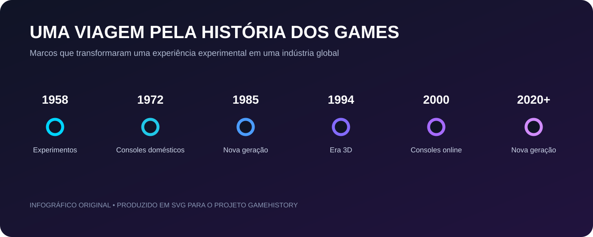

Experimentos ganham vida
Experiências como Tennis for Two demonstraram que uma tela também poderia ser um espaço de interação e diversão.
Dos primeiros experimentos eletrônicos aos mundos gigantescos de hoje: descubra como os videogames transformaram tecnologia, cultura e entretenimento.
Selecione um marco para descobrir um pouco mais sobre cada período.
Experiências como Tennis for Two demonstraram que uma tela também poderia ser um espaço de interação e diversão.
Dos encontros no sofá às comunidades online, os videogames aproximam pessoas, criam amizades e transformam partidas em lembranças compartilhadas. Hoje, jogar também é uma forma de socializar, competir e fazer parte de comunidades.
Conheça a era moderna →
Infográfico produzido especialmente para este projeto.

Pequena composição sintetizada para acompanhar a experiência.
Vídeo autoral de 27 segundos com seis cenas animadas, transições e trilha original.
Produção própria: roteiro visual, textos, elementos gráficos, animações e montagem criados especialmente para este trabalho.